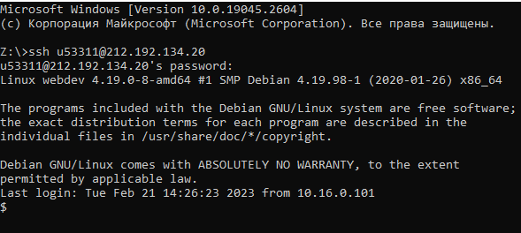
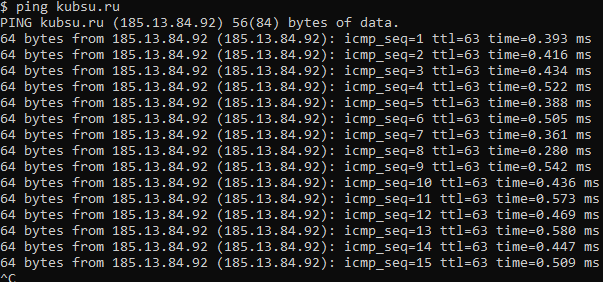
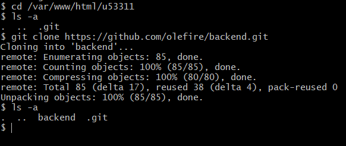
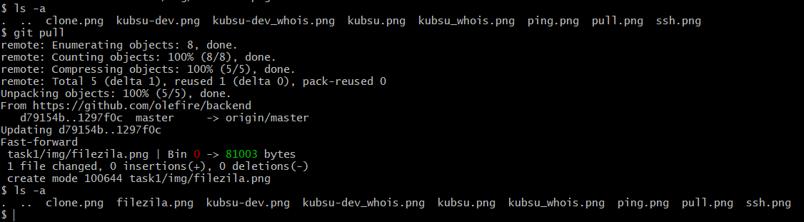

Подключаемся к серверу с помощью ssh
Команда ping позволяет проверить соединение между двумя узлами. Устанавливаем связь с kubsu.ru от сервера kubsu-dev.ru, узнаем IP-адрес kubsu.ru
DNS соединяет IP-адрес с доменным именем, которое ему соответствует.
NSLOOKUP — это утилита, которая позволяет через командную строку узнать содержимое DNS.
А-запись - адресная запись, которая используется для связи домена и IP-адреса сервера.
MX запись — запись, которая указывает на сервер, который принимает почту для домена.
С помощью команды nslookup узнаем A-записи и MX-записи kubsu.ru

С помощью команды nslookup узнаем A-записи и MX-записи kubsu-dev.ru

С помощью команды whois узнаем дату регистрации домена kubsu.ru
Сервис Whois позволяет узнать информацию о домене, свободен ли домен, его возраст, а также кто владелец домена – юридическое или физическое лицо.

С помощью команды whois узнаем дату регистрации домена kubsu-dev.ru

Копируем задание на локальный компьютер с сервера, предварительно добавив его туда

Пример клонирования с гитхаб репозитория
Отправляем изменения с гитхаба на сервер
